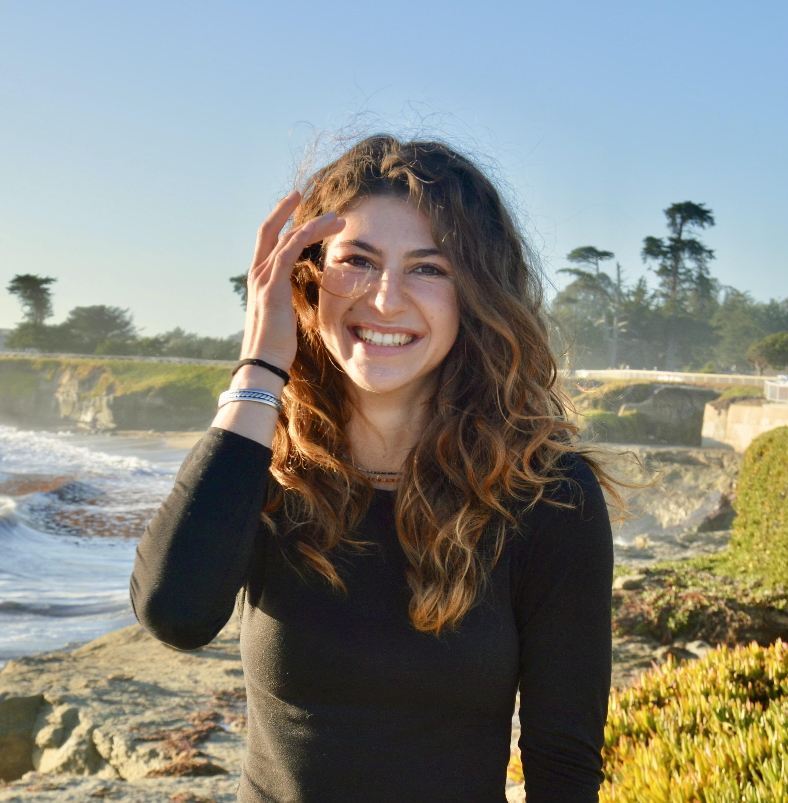
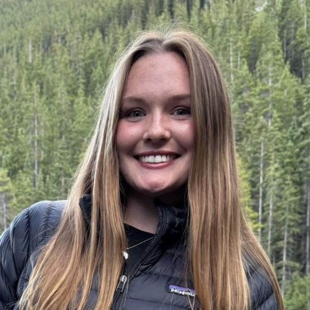
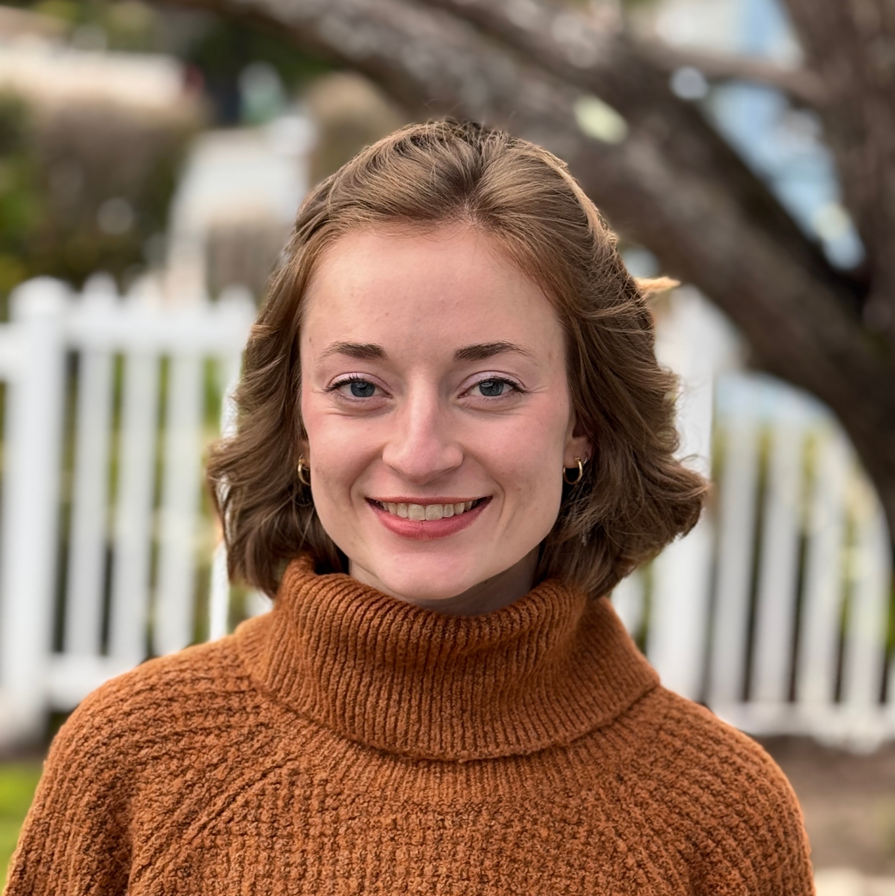

Lab members
Alexa Fredston

Dr. Alexa Fredston is a quantitative ecologist and biogeographer and Assistant Professor in the Department of Ocean Sciences at the University of California, Santa Cruz. She earned her Ph.D. from the Bren School of Environmental Science and Management at the University of California, Santa Barbara and graduated summa cum laude from Princeton University with a B.A. in Ecology and Evolutionary Biology and a certificate in Environmental Studies. Dr. Fredston’s publications are listed on her Google Scholar page. You can contact her for PDFs of any publications, and download her CV here.
Dr. Fredston is committed to translating science into action. As a postdoc, she collaborated with managers and fishermen through the Mid-Atlantic Fisheries Management Council. Previously, she worked at the Environmental Defense Fund as a High Meadows Fellow. She has served on working groups for CESAB, SNAPP, and NCEAS, aimed at synthesizing ecological information to advance biodiversity conservation and human well-being. Dr. Fredston is on the Steering Committee for FISHGLOB and a former board member and Treasurer of the Society for Open, Reliable, and Transparent Ecology and Evolutionary Biology. All of the code for her published research, as well as numerous coding tutorials she developed, can be viewed on GitHub. A number of her recorded talks can be found on this site.
Current lab members

Janaya Bruce joined the Fredston Lab in 2025 as a PhD student in Ocean Sciences. Before joining the lab, she worked at the Environmental Defense Fund in Austin, TX on science, policy, and community engagement for fisheries and food systems. She also conducted research with the Hawai’i Institute of Marine Biology on coral-symbiont responses to ocean warming and acidification. Janaya holds a BA in Molecular Biology with a certificate in Environmental Science from Princeton University. In the Fredston Lab, she aims to study marine protected areas and social-ecological systems, with a focus on how natural resource management and governance shape ecological and community outcomes. Outside of research, Janaya enjoys running, beach volleyball, backpacking, and climbing.

Luis Mario Ramirez Cruz is an undergraduate student and an Ernest F. Hollings Scholar with an interest in Computational Ecology, Data Analysis and Environmental Modelling. In the Fredston Lab, Luis Mario’s research focuses on comparing statistical and mechanistic models for rockfish species in California. You can find more information about Luis Mario’s research in his personal website.

Bella Lipsey joined the Fredston Lab in January of 2025 as a research assistant. She is a third year Marine Biology and Environmental Sciences undergraduate at UC Santa Cruz in the EEB and EPS departments. Her work entails literature review and fundamental data analysis, with advising from Jordana Sevigny and Alexa Fredston. Outside of lab, Bella is a member of the Gamma Phi Beta chapter on campus, and loves to be outside with friends and family.

Jordana Sevigny joined the Fredston Lab in 2023 as a PhD student in Ocean Sciences. Prior to moving to Santa Cruz, Jordana worked in Seattle in several labs researching transmissible cancer in bivalves, evolution and ecology of microbes, and alpine wildflower ecology and citizen science. Jordana holds a B.S. in Biology with an emphasis in Ecology from University of Washington. In the Fredston Lab, Jordana’s research centers on mechanistic modeling of marine invertebrate species’ dispersion and range edge dynamics. Outside of lab, Jordana enjoys many hobbies including kayaking, camping, reading, and crafting. Read more of her research on Jordana’s Google Scholar page.

Theodore Tran is a PhD student and a National Science Foundation Graduate Research Fellow interested in investigating questions of ecology among sharks and other large, mobile marine predators. He earned in BS in Marine Biology at San Jose University. He aims to integrate and synthesize interdisciplinary methods to establish factors and trends in migratory patterns and habitat use in light of anthropogenic impacts and climate change.
Dr. Emma Walker is a postdoctoral scholar in the Fredston Lab working on both developing and applying theory that better resolves the nonlinear dynamics present in ecological systems. The aim of her research is to further understanding of the interplay of fundamental processes and address their consequences for ensuring the sustainability of populations. One of the main projects she is currently working on is using empirical dynamical modelling to discover whether marine heatwaves have had nonlinear consequences on fish species abundances in the bottom trawl surveys of the North Eastern United States. She is also interested in and working on how spatiotemporal variability impacts the size and rates of change of species’ populations and ranges. Read more about Emma and her research on her personal website or her Google Scholar page.